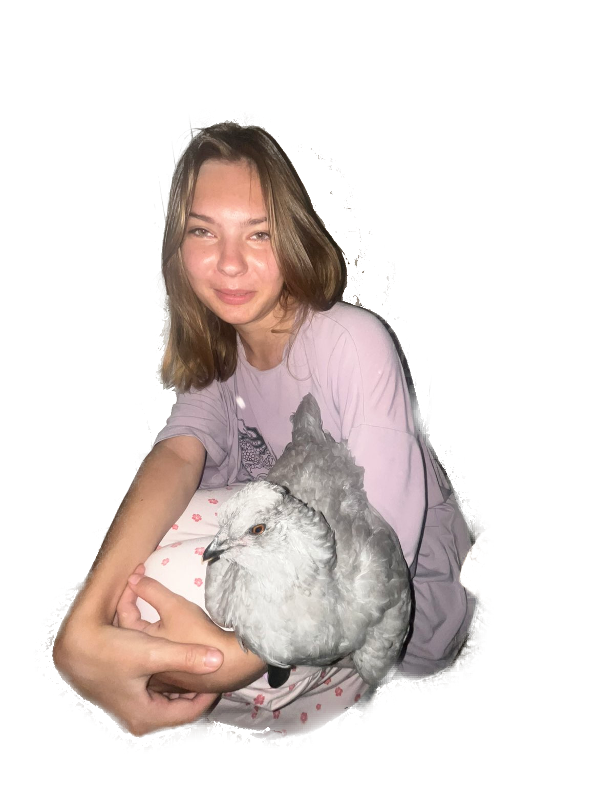

Bakom bilderna
Hej, jag heter
Molly.
Jag är nyfiken på hur ljus, färg och beskärning kan förändra känslan i en bild.
Den här bildserien är ett sätt att prova mig fram. Jag tycker om att upptäcka detaljer i både natur och stad, och att hitta ett lugnt färgspråk som låter motiven passa ihop utan att göra dem likadana.
Med den här uppgiften har jag tränat på ljusbalans, färgkorrigering, beskärning och färgläggning. Jag har också lärt mig hur små justeringar kan göra en bildserie mer sammanhållen.